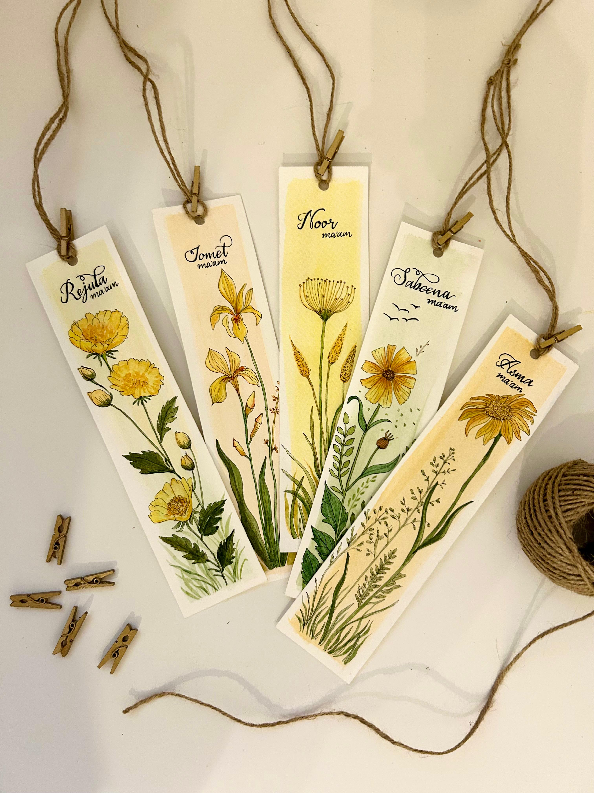
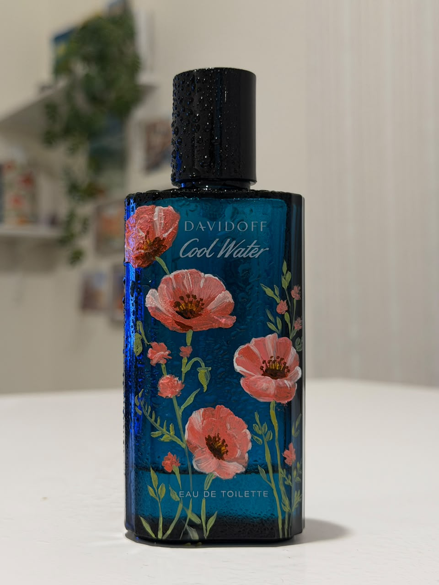
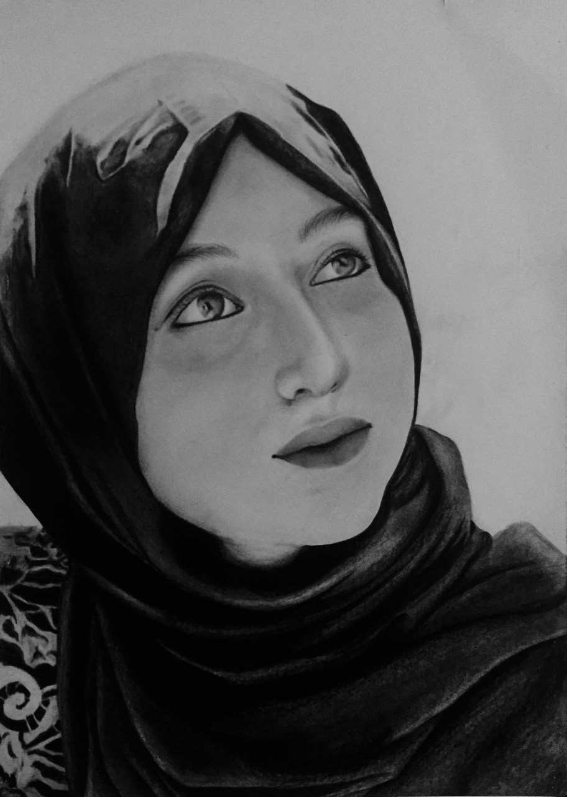
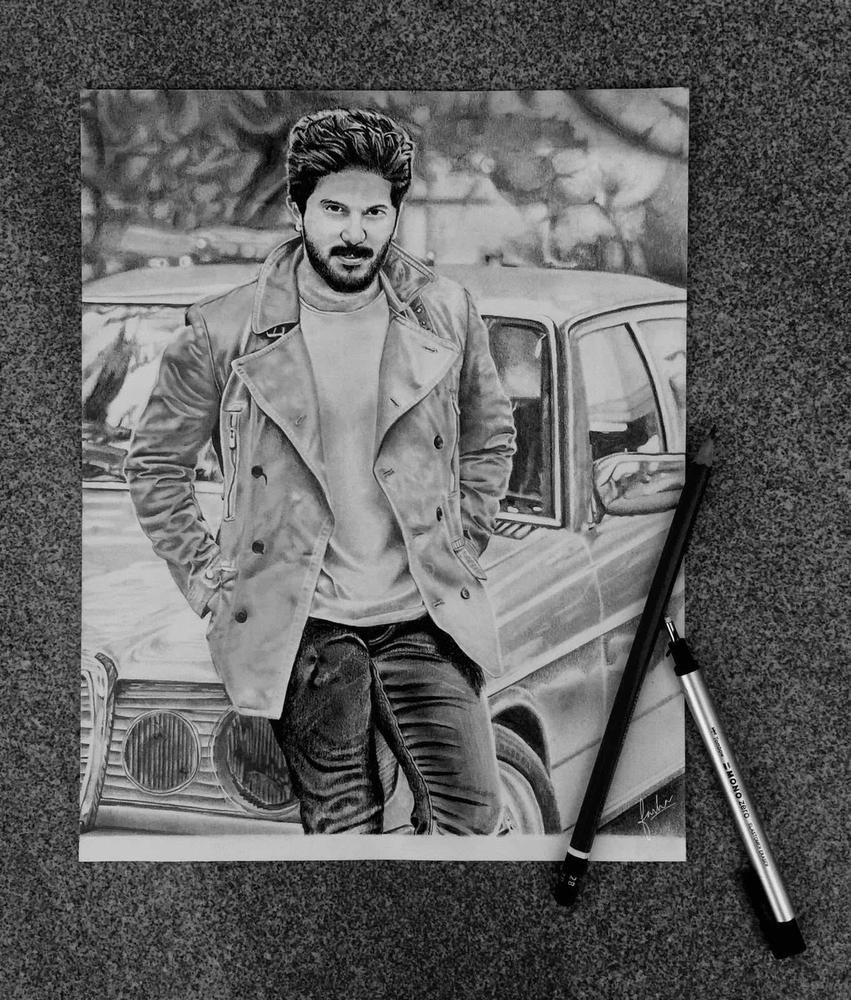
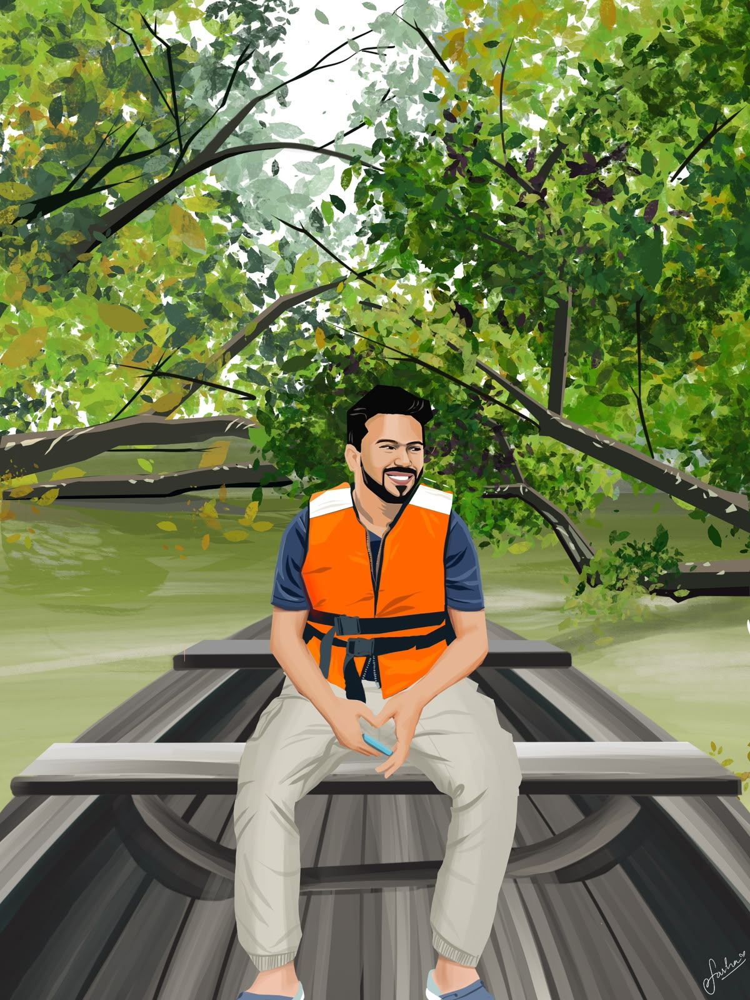
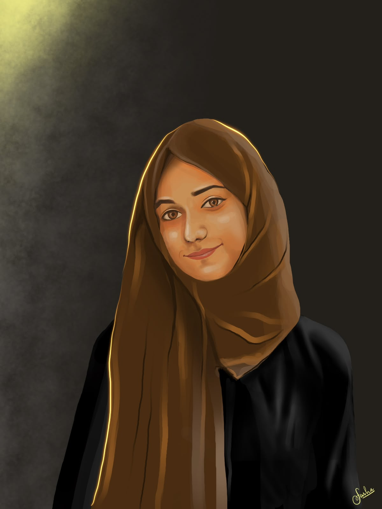
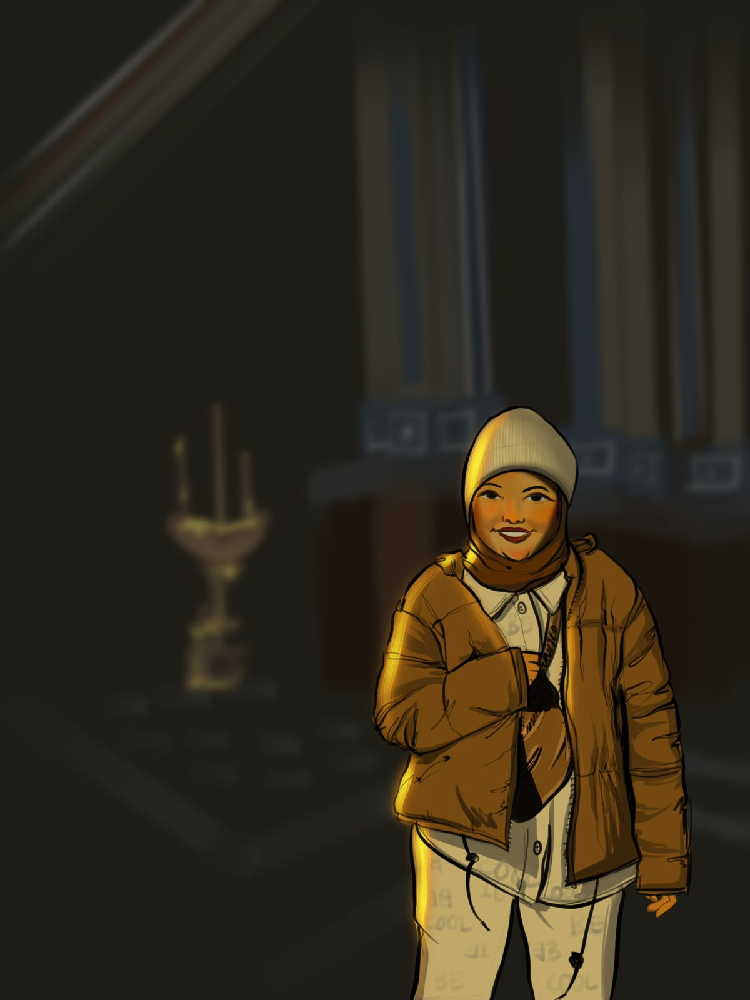

A LITTLE OF WHAT I DO
Selected works.
01 Calligraphy
There’s a certain beauty in turning words into something to be held and treasured. From names and meaningful phrases to little details that make an occasion special, I love creating calligraphy that adds a personal touch to every piece.





02 Fashion Illustrations


There’s something special about capturing an outfit as a little piece of art. I create personalised fashion illustrations for weddings, gatherings, and brand experiences, bringing together the colours, outfits, and details that make each event its own.
03 Bottle Painting
Giving bottles a new character through hand-painted florals, details, and thoughtful transformations



04 Portraits
Hyperrealistic portraiture, created in the studio with a focus on precision, expression, and lifelike detail.



05 Digital Illustrations
Detailed digital portrait illustration created in Procreate, exploring expression, texture, and the little details that make each face unique, each done in different style.



06 Henna
From intricate bridal henna to live henna experiences and themed designs for Eid and special occasions, each piece can be thoughtfully created to suit the moment and its story.


07 Made on Request
A collection of custom creations, personalised details, and creative possibilities made to suit your vision. - Hot foiling - Live Engraving - Air dry keychains - Fridge magnets - Custom stamps and more, on request.